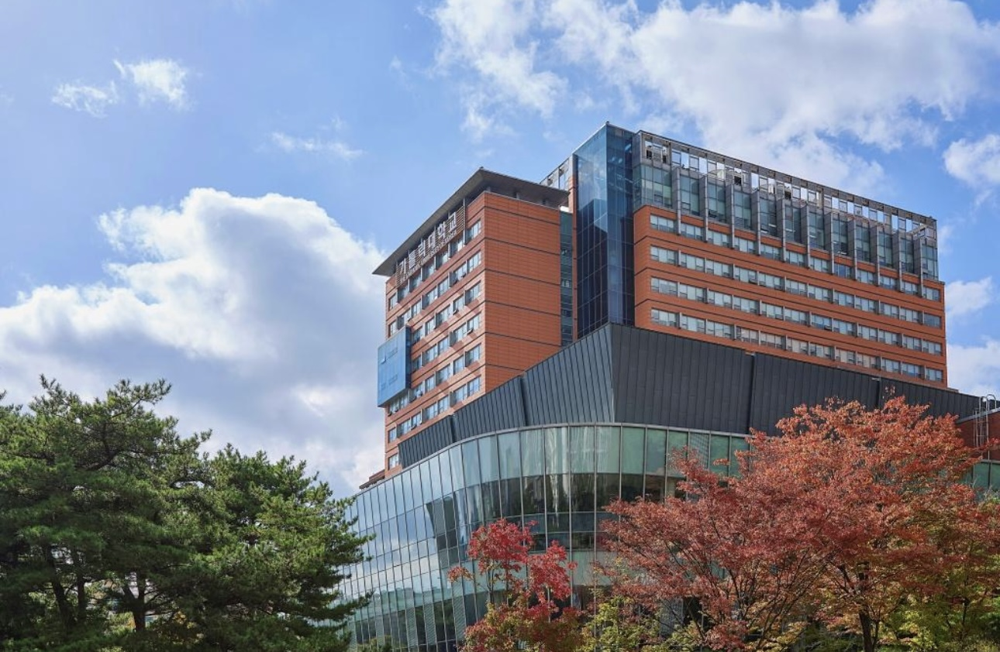

이 장소를 선택한 이유
김수환관은 학생들이 이용하는 다양한 공간이 모여 있어 캠퍼스 생활의 분위기를 느끼기 좋은 장소라고 생각하여 선택했습니다.
위치
가톨릭대학교 성심교정 내부에 위치하며, 다른 캠퍼스 시설과 함께 방문하기 좋은 곳입니다.
추천 활동
- 건물 내부 시설 둘러보기
- 친구와 함께 잠시 쉬기
- 주변 캠퍼스 공간 산책하기
사진

지도
아래 링크에서 김수환관의 위치를 확인할 수 있습니다.
네이버 지도에서 김수환관 위치 보기